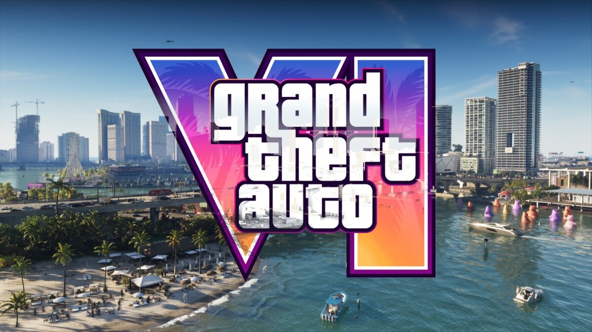

GTA6 스펙 212GB, 사전 다운로드 자동 설정 PS5 Xbox
사전 다운로드가 열리고 나서야 설정을 뒤지면 한 박자 늦어요. 본체를 켜 두고 잤는데 아침에 보니 자동 다운로드가 꺼져 있다면 정말 아쉽잖아요. 인벤 보도에 따르면 록스타게임즈가 PS5와 Xbox 모두 자동으로 받으려면 갖춰야 할 조건을 안내했고, 사전 다운로드에 필요한 여유 공간은 최대 212GB라고 해요. 정식 이름은 Grand Theft Auto VI(GTA VI)인데요, 이 글에서는 계속 GTA6라고 부를게요. 이 글에선 날짜와 시각은 다루지 않으니 록스타 공식 공지에서 직접 확인하세요. 여기서는 '미리 맞춰 둘 설정'과 '저장 공간 확보'에만 집중합니다.

212GB 소식을 전한 인벤 기사의 대표 이미지예요.
이미지 출처: Rockstar Games, 인벤 기사 · 네이버 본문엔 받아서 재업로드 권장
GTA6 사전 다운로드 PS5 자동 다운로드, 휴식 모드는 어떻게 맞추나요
PS5에서는 '자동 다운로드'를 켜고, 대기 모드에서도 '인터넷 접속 유지하기'를 켜 두면 본체를 쉬게 해 둔 채로 받을 수 있는 상태가 돼요.
록스타 안내에는 '휴식 모드'를 유지하라고 나오는데요, 한국어 PS5 메뉴에서는 같은 기능이 '대기 모드'라는 이름이에요. 공식 지원 문서에도 대기 모드 중에 자동 다운로드를 받으려면 인터넷 접속을 유지하도록 설정해야 한다고 나와 있어서, 아래 두 군데는 꼭 보셔야 하고 설치까지 맡기려면 하나 더 있어요.
- 대기 모드에서 인터넷 유지: 설정 > 시스템 > 절전 모드 > 대기 모드에서 사용할 수 있는 기능 > '인터넷 접속 유지하기' 켜기
- 받아 두는 설정: 설정 > 저장된 데이터 및 게임/앱 설정 > 자동 업데이트 > '자동 다운로드' 켜기
- 설치까지 맡기는 설정: 같은 자동 업데이트 메뉴의 '대기 모드에서 자동 설치'
'자동 다운로드'만 켜면 받기만 하고 설치는 하지 않거든요. 받아 두는 것만 맡길지 설치까지 맡길지는 보도된 록스타 안내엔 '자동 다운로드'까지만 나와서, 취향대로 고르시면 돼요.
이 화면에서 '인터넷 접속 유지하기'가 켜져 있어야 해요.
같은 화면에 있는 설치 쪽 항목도 한 번 같이 보세요.
GTA6 사전 다운로드 Xbox 자동 업데이트와 절전 모드는 어떻게 하나요
Xbox Series X|S는 록스타 안내 기준으로 자동 업데이트를 켜 두고, 전원이 켜져 있거나 절전 모드인 상태로 두면 돼요.
Xbox는 아직 알려진 안내가 여기까지예요. 설정 메뉴 이름은 본체마다 다를 수 있어서, 본체에서 직접 보시는 게 제일 정확하답니다. 에너지 절약 모드로 두어도 받아지는지는 록스타가 '절전 모드'만 언급해서 알 수 없는 부분이에요. 제 의견으로는 사전 다운로드 기간만큼은 안내된 절전 모드 쪽에 맞춰 두는 게 마음 편할 것 같아요.
Xbox는 본체 설정에서 업데이트·전원 항목을 한 번 보시면 돼요.
전원 상태, 이럴 땐 이렇게
· 밤새 본체를 켜 두기 부담스럽다면: PS5는 대기 모드와 인터넷 유지, Xbox는 절전 모드로 맞추세요. 록스타가 안내한 상태가 바로 이 둘이라서예요.
· 화면 앞에서 지켜보며 받을 거라면: 전원을 켠 채로 두세요. 안내에 '전원 켜짐'이 함께 들어 있어서 이쪽이 가장 단순해요.
GTA6 스펙 저장 공간 212GB, 내 본체로 충분한가요
212GB는 사전 다운로드에 필요한 여유 공간의 최대치이고, 기기별 수치는 아직 공개되지 않았어요.
인벤 기사로는 록스타가 PS5와 Xbox Series X|S를 나누지 않고 기기에 따라 다르다고만 설명했는데요, 게임메카도 하드웨어에 따라 최대 212GB가 필요하다고 전했어요. 그러니 내 기기의 정확한 수치는 모르는 상태에서, 일단 최대치를 기준으로 보는 편이 무난하죠. 이 숫자는 받는 동안 비워 둬야 할 공간이지 설치가 끝난 뒤의 총 크기를 보증하는 값은 아니고, 출시일 패치 용량은 아직 알려진 게 없어요. 제 의견으로는 212GB에 딱 맞추기보다 여유를 더 두는 편이 안전해요. 현재 남은 공간은 PS5 설정 > 스토리지에서 바로 볼 수 있어요.
여기서 남은 공간이 212GB보다 넉넉한지 먼저 보세요.
GTA6 용량 212GB 확보하는 법, 삭제 이동 확장 체크리스트
PS5에서는 안 하는 게임 삭제, 일부 데이터만 지우는 '커스터마이즈', M.2 SSD 확장으로 공간을 만들 수 있어요.
| 방법 | PS5에서 하는 법 | 알아 둘 점 |
|---|---|---|
| 게임 삭제 | 설정 > 스토리지 > 콘솔 스토리지 > 게임 및 앱에서 선택 후 삭제 | 구매한 게임은 라이브러리에서 다시 받을 수 있어요 |
| 일부만 삭제 | '커스터마이즈'가 보이는 게임은 필요 없는 데이터만 골라 삭제 | 게임 전체를 지우기 아쉬울 때 좋아요 |
| M.2 SSD 확장 | PCIe Gen4x4 NVMe(M키) 250GB~8TB, 방열판 필수 | 순차 읽기 5,500MB/s 이상 권장, 처음 쓸 때 포맷돼서 안의 데이터가 지워져요 |
| Xbox | 삭제와 확장 카드 방법은 본체 저장 공간 화면에서 직접 보세요 | 메뉴 이름은 본체마다 다를 수 있어요 |
화면에서 용량 큰 게임을 먼저 보세요.
공간 확보, 이럴 땐 이렇게
· 여유가 212GB에 조금 모자란다면: 안 하는 큰 게임을 한두 개 삭제하세요. 구매한 게임은 라이브러리에서 다시 받을 수 있어서 부담이 적어요.
· 크게 모자란다면: M.2 확장을 보세요. 한 번 늘려 두면 앞으로 받을 큰 게임에도 계속 쓸 수 있어서예요.
M.2는 최신 시스템 소프트웨어가 필요하고 SATA 방식은 지원하지 않아요. 조건은 플레이스테이션 M.2 SSD 지원 문서에, 저장 공간 관리는 저장 공간 관리 지원 문서에 나와 있고, 스마트폰의 PlayStation App으로도 관리할 수 있다고 해요.
자주 묻는 질문
Q. PS5의 '네트워크를 통해 PS5의 전원을 켤 수 있게 하기'도 켜야 하나요?
그 메뉴는 스마트폰 앱이나 리모트 플레이로 본체를 켜는 기능이라 자동 다운로드와는 별개예요. 자동 받기에 필요한 건 앞에서 본 두 설정이에요.
Q. USB 외장 저장장치에 GTA6를 받아도 되나요?
PS5 게임은 USB 확장 스토리지에 보관할 수 있지만, 플레이하려면 콘솔 스토리지나 M.2로 옮겨야 한다고 공식 문서에 나와 있어요. GTA6를 USB에 바로 설치할 수 있는지는 아직 알려지지 않았어요.
Q. 박스판으로 예약했는데 설정이 다른가요?
박스판에 대한 별도 설정 안내는 아직 나온 게 없어요. 인벤은 소매점으로 풀리는 박스판이 디지털판보다 사전 다운로드가 늦어질 것으로 보인다고 전망했어요. 코드를 입력하는 방법은 같이 보기의 사전 다운로드 방법 글에 정리돼 있어요.
Q. 밤새 켜 두고 잘 때 따로 챙길 게 있나요?
록스타 안내로는 자동 설정·전원 상태·여유 공간(최대 212GB)이 나와 있어요. 그 밖에는 자기 전에 와이파이 연결과 남은 공간을 한 번 보고 자는 게 마음 편한데요, PS5라면 대기 모드에서 인터넷 접속 유지하기가 켜져 있어야 연결이 이어지거든요.
GTA6 사전 다운로드 자동 설정 정리
저라면 공간부터 비우고 그다음에 자동 설정을 만지겠어요. 시작이 다가오면 록스타 안내와 메뉴 이름이 바뀌지 않았는지 한 번만 다시 볼 생각이에요. 출시일에 설치 기다리지 말고 바로 달려 봐요 ㅎㅎ
✔ GTA6 같이 보기 좋은 내용
· GTA6 사전 다운로드 방법, 디지털·실물 코드로 받는 법
· GTA6 예약 차이 스탠다드 얼티밋 에디션 비교, 예약 특전은 어디까지 공통일까?
· GTA6 출시일 11월 19일 확정, 한국 가격 89,800원 PC 출시 여부 PS5 에디션 정리
참고한 곳 (2026.11.06 기준)
· 인벤 GTA6 사전 다운로드 용량·설정 보도
· 게임메카 GTA6 사전 다운로드 용량 보도
· 플레이스테이션 자동 업데이트 지원 문서
· 플레이스테이션 M.2 SSD 지원 문서
· 플레이스테이션 저장 공간 관리 지원 문서